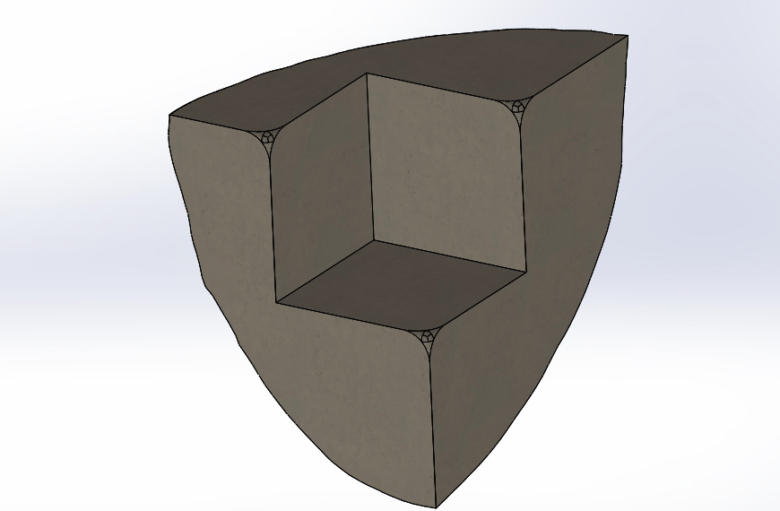

Solving Phun-bos
If you’ve met me, you know I like space. The infinite nature of the universe, our smallness in comparison, the unending possibilities of discovery. You also know I like Rubik’s cubes. On a smaller scale, the cube is equally infinite. There are over 43 quintillion permutations of the 3x3 cube, a set of possible states far beyond what any human is capable of reaching in a thousand lifetimes.
So why not combine the two? Kenneth Brandon, a YouTuber/cuber under the handle RedKB, designed a custom cube by 3D printing his company’s logo with a hole in the middle just big enough for a 2x2 cube internally. This inspired me to create my own edition of a custom 3D printed cube.
Aim for the Moon
Step one is to select a planetary body as the basis for my model. I chose Phobos, the larger of Mars’ two moons. I had a few reasons for doing so.
- Any ordinary planet would be indistinguishable from another in a 3D print of this scale. All the other planets are basically spheres, so you would have few interesting features on the surface.
- Phobos has a massive crater named Stickney that is incredibly interesting in its own right. But for our purposes, it’s a unique feature that would be cool to render in a 3D model.
- My senior design team is currently designing a mission to Phobos. It’s a fascinating satellite that we don’t know a lot about and I’ve grown to love it.
- Phobos looks like a potato. Who doesn’t like potatoes?
 Stickney is the massive cavity on the side of Phobos. Credit: Viking Project, JPL, NASA
Stickney is the massive cavity on the side of Phobos. Credit: Viking Project, JPL, NASA
Roll Model
The next step is to begin the modeling process. RedKB’s procedure was to create the logo he wanted, extrude it out, cut a hole out for the cube in the center, and split it across the three planes (XY, XZ, and YZ) to allow rotation. Unfortunately, Phobos isn’t a 2D shape that can be easily extruded upwards from a sketch. However, there are many models already available for use! I found mine here. This website has many different models of Phobos with varying resolutions. I chose the lowest fidelity for a couple of reasons.
- I didn’t know how good the 3D printer I would use is. Having a hyper-accurate rendition of Phobos wouldn’t be useful if the printer couldn’t capture the resolution.
- The higher fidelity models nearly broke SOLIDWORKS, the modeling software I was using. There were simply too many individual features that couldn’t be efficiently rendered even on the virtual machine I was running the software on. This would have been fine if I just needed to run it once, save the file, and call it a day. But I needed to manipulate and cut the model, and every minor change would take several minutes to run. That compounded if I made a mistake and had to undo and redo everything.
I loaded up the Thomas model from the previously referenced link and this is what that looks like. I resized it to something I thought was reasonable and ended up with this.
 Stickney Crater is visible on the right side of the body.
Stickney Crater is visible on the right side of the body.
That’s nice, but that’s just a solid body. So I sketched a square and extruded it into a cube at the center of Phobos. Then I told SOLIDWORKS to subtract the cube from Phobos and just like that, I have a cube-shaped hole in the middle. The specifics of the size of the hole will depend on the model of 2x2 used in the center of the cube. I chose the Z Mini 2x2 Keychain Cube from The Cubicle. (This isn’t a sponsored post, I just like The Cubicle!) It had a few advantages. For one, it’s very cheap. Second, it’s very small - at 35mm to a side, it lets me print a slightly smaller puzzle. Remember, the actual size of the puzzle will be much larger than the 2x2 used in the center, so minimizing this will result in a more manageable size overall. Also, the keychain itself is removable, so I’ve got no concerns with that.
You can’t see this in the images above, but Phobos is split across the three planes in order to create 8 unique parts. Every part is slightly different on the outside, but that’s the beauty of it! Finally, we have to polish up each of the pieces. Long-time cubers will remember when every piece on the cube was square and blocky. This made them useless for cubing. So I went through each piece and rounded each corner that would interact with another piece.
This is a little tricky to do on corners in SOLIDWORKS, but I found this thread to be useful. In a nutshell, select all the edges leading to a given vertex, then select Fillet. Set the actual fillet to be something very small, almost nonexistent. Then set the Setback Parameter to be what you’d like the actual radius of curvature of the vertex to be. In my case, I used a fillet of 0.001 mm and a Setback Parameter of 3mm. Click the vertex to apply it to, then Set All, and save the fillet. That does it quite nicely. Repeat for all eight pieces, and you’re good to go!
 Whaddya mean, we don’t know what the interior of Phobos is like? I’ve got it right here!
Finally, export every piece to an STL file and head to your nearest 3D printer!
Printing a Moon
This is the fun part. The Aerospace Engineering department at Georgia Tech has its own Aero Maker Space for student use, including 3D printers. I headed there, submitted my print, and that was that. By the next day, I had a beautiful print ready.

I should note that my filleted corners were underwhelming, to say the least. If I repeated the process, I would make my fillets much larger than 3mm. This may take some trial and error, but I’m satisfied for now. The 2x2 cube arrived a few days after the print, which meant I had everything I needed to assemble the puzzle. The cube doesn’t turn very well - understandable, given that it was built as a novelty keychain toy, not a speed cube. Loosening the tensions on the core helped, but it was still pretty rough. A friend provided some cube lubricant to help with the internal friction and I went back to the AE Maker Space in search of some super glue.
Putting the Pieces Together
Before I started gluing, I sanded each face of the cube down with some 220 grit sandpaper to help with adherence. Then a dot of glue went onto each face a given piece of the cube before applying the printed piece.
 Five pieces glued, three to go.
Five pieces glued, three to go.
And just like that, I was done!
 We’re - ahem - phinished!
We’re - ahem - phinished!
Since the pieces aren’t uniform, scrambling results in all kinds of strange shapes. For example, here’s what a Sune algorithm looks like:
 Dayan TengYun M for scale
Dayan TengYun M for scale
Phinal Thoughts
This was an enjoyable project. If I could have changed anything, it would have been to fillet the corners more. There’s still a lot of catching so you have to make sure each piece is lined up perfectly before you rotate. Of course, this is more of a decorative piece than a competition-worthy speed cube, so I’m not terribly disappointed by it.
All in all, this was a cool project to work on! And since Phobos is such a dark and gloomy name, I hereby christen my new puzzle “Phunbos”!
With my head in the stars,
Joshua